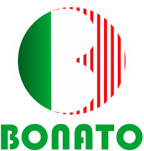
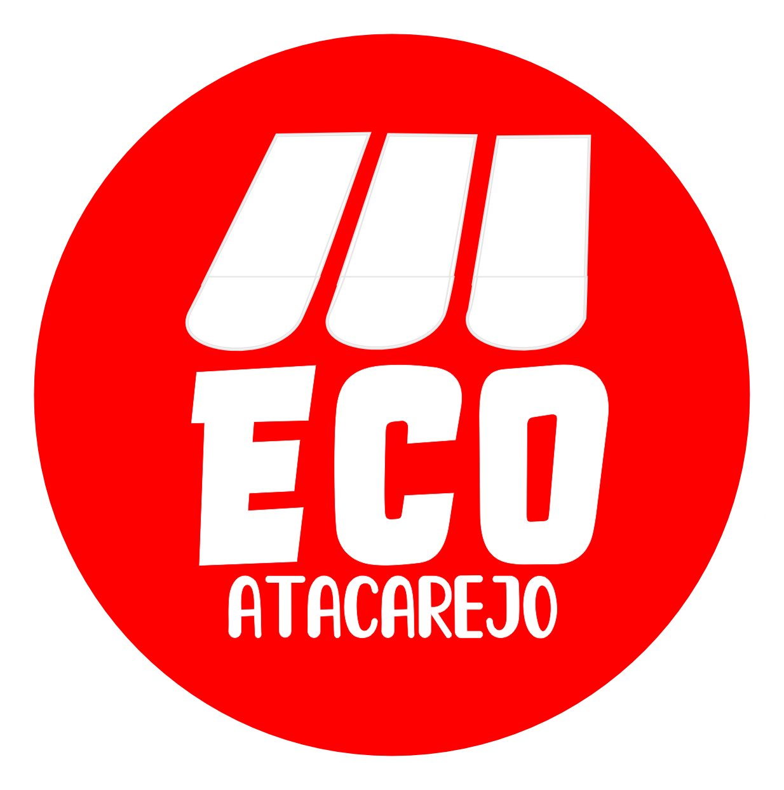

<div class="container">
<mat-sidenav-container class="sidenav-container">
  <mat-sidenav
    #drawer
    class="sidenav"
    fixedInViewport
    [attr.role]="(isHandset$ | async) ? 'dialog' : 'navigation'"
    [mode]="(isHandset$ | async) ? 'over' : 'side'"
    [opened]="(isHandset$ | async) === false"
  >
    <div class="logo">
      
      
     
    </div>
  
    <mat-nav-list>
      <p-panelMenu [model]="items" [style]="{'width':'289px'}"></p-panelMenu>
    </mat-nav-list>
    <div class="botaoSair">
      <button mat-stroked-button routerLink="/" >
        <mat-icon>logout</mat-icon>
        Sair
      </button>
    </div>
  </mat-sidenav>
  <mat-sidenav-content>
    <mat-toolbar class="toolbar">
    
      @if (isHandset$ | async) {
        <!-- nao adicionar a tag color para a cor do botao hamburger -->
      <button
        type="button"
        aria-label="Toggle sidenav"
        mat-icon-button      
        (click)="drawer.toggle()"
      >
        <mat-icon aria-label="Side nav toggle icon">menu</mat-icon>
      </button>
      }
      <h1 class="titulo"> <app-nometopo></app-nometopo></h1>
    </mat-toolbar><hr>
    <router-outlet></router-outlet>
  </mat-sidenav-content>
</mat-sidenav-container>
</div>